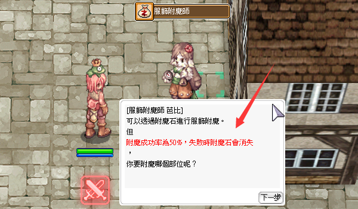
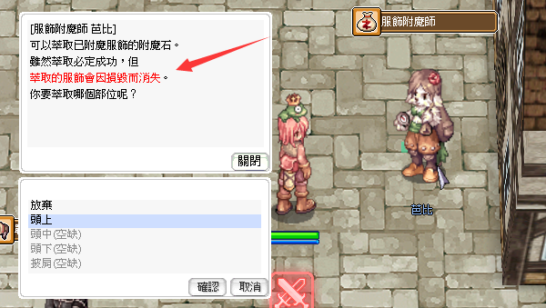

Enchant-System (附魔系統)
Über Enchant-Slots Zusatzstats auf Ausrüstung bringen — dazu kommt in Zero die Möglichkeit, bereits applizierte Enchants per Extract wieder als Enchant Stone herauszulösen.
🔮 Was ist Enchanting?
Sämtliche Ausrüstung in Ragnarok Zero verfügt über Card Slots. „Enchanting" bedeutet: einen bisher leeren (gesperrten) Slot mit einem ability-gebenden Item befüllen. Zusätzlich bietet Zero den Service Extract zum Herauslösen bereits gesetzter Enchants.

📋 Gegenstandsinformationen: (Costume) Frog Prince Headgear — Deutsch aufklappen
Ein kosmetischer Ausrüstungsgegenstand für den Kopf, der als Froschkönig dargestellt ist.
- Name: (Costume) Frog Prince Headgear (Account Bound)
- Beschreibung: Obwohl er wie ein Frosch aussieht, war er ursprünglich ein sehr rücksichtsvoller junger Mann, der darauf wartet, dass ein Mädchen seinen Fluch bricht.
- Funktionen: [Costume Enchantment], [Costume Binding NPC]
- Kategorie: Costume Equipment
- DEF: 0
- Position: Upper
- Gewicht: 0
- Benötigtes Level: 1
- Klasse: Alle Klassen
- Status: Account Bound Item
Der Button im UI zeigt 'Look' (Aussehen anlegen). Der untere Bereich mit den Rauten deutet auf verfügbare Verzauberungsslots hin.
🪄 Enchant (附魔)
Die Regeln für jeden Enchant variieren je nach Thema. Typische Parameter sind:
- Benötigte Materialien & Anforderungen (z. B. Zeny-Preis, Reagenzien, Ausrüstungszustand)
- Erfolgs- und Fehlschlag-Chance
- Weitere Einzel-Regeln, die vor dem Klick unbedingt gelesen werden sollten

📋 NPC Dialog: Costume Enchantment — Deutsch aufklappen
Ein Dialogfenster mit dem NPC 'Costume Enchanter Babi', der die Möglichkeiten und Risiken der Kostüm-Verzauberung erklärt.
- [Costume Enchanter Babi]
- Sie können Kostüme durch den Einsatz von Enchantment Stones verzaubern.
- Aber:
- Die Erfolgsrate der Verzauberung beträgt 50%, bei einem Fehlschlag gehen die Enchantment Stones verloren.
- Welchen Teil möchtest du verzaubern?
Der NPC Babi bietet Kostüm-Verzauberungen an. Es besteht ein Risiko, dass Materialien bei einem Fehlschlag zerstört werden.
🧪 Extract (萃取)
Beim Extract wird ein bereits enchantetes Costume zerstört — im Gegenzug erhältst du den Enchant Stone zurück. Das lohnt sich vor allem bei seltenen oder hochwertigen Abilities, die man auf einem neuen Item weiterverwenden möchte.

📋 NPC-Dialog: Kostüm-Verzauberer Bobby — Deutsch aufklappen
Ein Dialogfenster des NPCs 'Costume Enchanter Bobby', der die Extraktion von Enchant-Steinen aus Kostümen erklärt.
- Abbrechen
- Upper (Headgear)
- Middle (Headgear) (leer)
- Lower (Headgear) (leer)
- Garment (leer)
Der NPC warnt, dass die Extraktion des Enchant-Steins erfolgreich ist, das Kostüm dabei jedoch zerstört wird. Der Spieler wird aufgefordert, einen Ausrüstungsslot zu wählen.
📚 Aktuell freigeschaltete Enchant-Pools
🎽 Costume-Enchant (服飾附魔)
Basissystem für Costume-Slots — Details auf der offiziellen Seite.
⚔️ 80MD — Annihilation (殲滅隊-專屬附魔)
Exklusive Enchants für 80er-MD-Equipment.